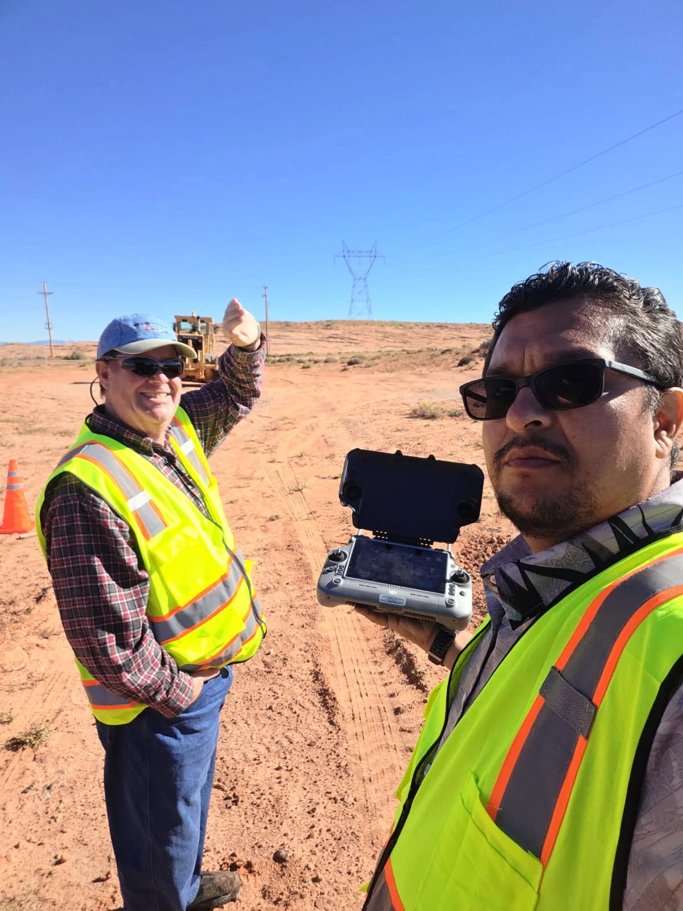

About
Who you are actually hiring.
Axis Fields is a veteran-owned geospatial company in Buckeye, Arizona. One person plans the flight, processes the data and signs off on what goes out the door, which is why nothing leaves here described as more certain than it is.
Background
Founded by Jesse Aguilar, a Marine Corps veteran with a professional background in GIS and enterprise ESRI systems, FAA Part 107 certified, with GIS certification through UC Riverside and a Six Sigma certification.
That GIS background is the reason the deliverables land in the systems your team already runs instead of a format somebody has to convert.
How we work
A fixed price before anything is flown. Access and airspace settled at the quote. A written statement with every delivery saying what was captured and what was not.
If a job needs something we do not do, we say so and point you at who does. We would rather lose the invoice than hand over a record somebody later finds out they could not rely on.
Airspace
We hold a standing FAA wide-area authorization for the Luke Air Force Base Class D airspace, valid through September 2028. A large part of the West Valley sits inside it, and there is no automated approval path there. In practice that means a Glendale, Peoria, Surprise or Litchfield Park site can be scheduled on the same timeline as one in open airspace.
Elsewhere in the Valley, the controlled airspace around Sky Harbor, Deer Valley, Chandler, Falcon Field, Goodyear and Mesa Gateway is coordinated before the quote, not on flight morning.
Credentials

- FAA Part 107 Remote Pilot Certificate
- Veteran-owned, registered in SAM.gov for federal work
- Standing FAA wide-area airspace authorization, Luke AFB Class D, through September 2028
- Certificate of insurance available on request
Start with the site.
A short call settles the scope, the access, the airspace and the price. No obligation, and no charge for the conversation.